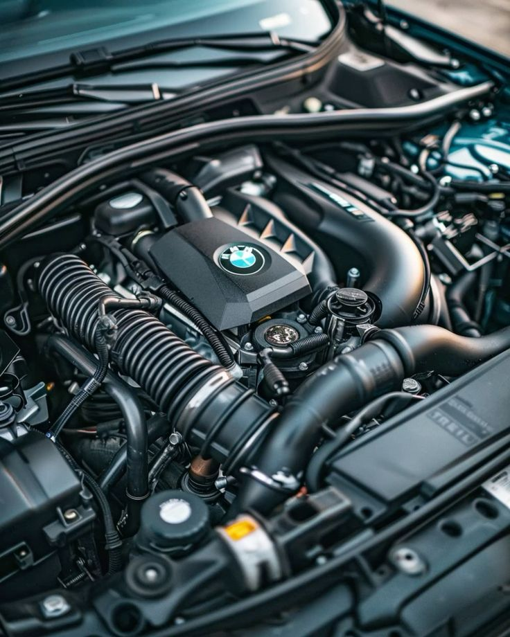
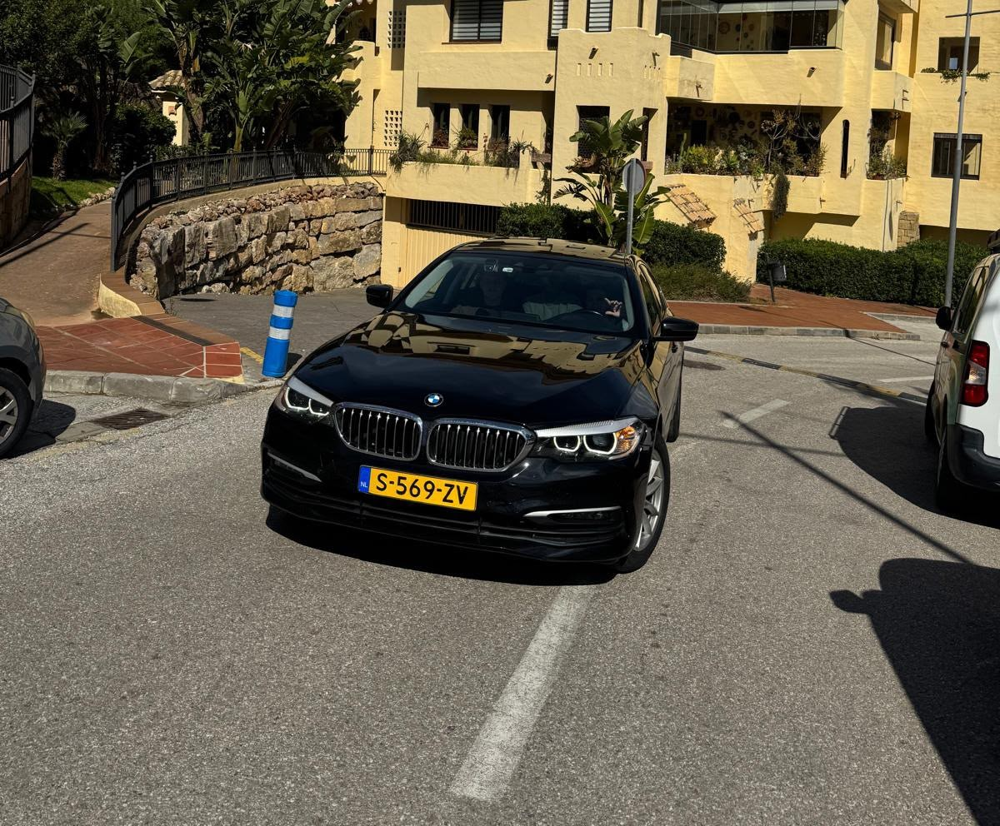

BMW
BMW Modifications
BMW can be modified in many different ways.
Click on one of the modifications below to learn more.
BMW can be modified in many different ways.
Click on one of the modifications below to learn more.




ECU engine chiptuning is a modification that changes the software that controls your car's engine, usually by increasing its power and improving its acceleration. It controls things like fuel injection, ignition timing and, in turbocharged engines, turbo pressure. By adjusting these settings, a tuner can change how the engine performs. By adjusting certain settings, a tuner may increase engine power and torque. The results depend on the BMW model, its engine and the software being used. Incorrect tuning can damage engine components or affect reliability and emissions.
Do you want to do it yourself?
Here are the tools you're going to need:
Before doing anything, find your BMW's model, production year, engine type and ECU version. The ECU is the computer that controls important engine functions.
You need a laptop, compatible tuning software, a suitable programming interface, a battery support unit and diagnostic software.
Before changing anything, the car needs to be checked for mechanical problems. You can use diagnostic equipment to look for error codes and check the engine's condition.
Most cars have an OBD-II diagnostic port, usually inside the cabin near the driver's footwell. A compatible interface connects this port to the laptop.
The car's battery supplies electricity to its electronic systems. During ECU programming, the voltage must remain stable. A suitable battery support unit helps prevent power interruptions that could interrupt the programming process.
Before making changes, you should save the original ECU data when the vehicle and tools support it. This backup may help restore the original calibration if necessary.
You need to adjust compatible parameters according to the engine, its hardware and the desired performance.
Once the calibration has been checked and validated, you need to use compatible programming equipment to write it to the ECU. The vehicle-specific instructions must be followed carefully because an interruption can cause programming failure.
After programming, scan for error codes and check that the ECU and engine are operating correctly.
Before driving the car on public roads, confirm that the modification meets applicable Dutch requirements for emissions, noise and vehicle approval.
The exhaust system carries gases produced by the engine away from the vehicle. It also helps control noise and emissions.
Do you want to do it yourself?
Here are the tools you're going to need:
Identify the BMW model, engine and production year. Purchase a compatible exhaust kit and check that it is suitable for road use in the Netherlands.
Park on a level surface, let the exhaust cool completely, and secure the vehicle using professional lifting equipment or correctly rated supports. Never work beneath a car supported only by a jack.
Locate the muffler, connecting pipes, clamps, mounting brackets and rubber hangers. Check for corrosion, damaged mounts and electronic exhaust-valve connections.
Following the appropriate BMW-specific service instructions, support the existing system, release the connections and mounts, and remove the relevant section. Position and connect the replacement using specified hardware.
Ensure the pipes and tailpipes sit correctly, have adequate clearance from surrounding components, and use the manufacturer's specified tightening torques.
Check mounting points, connections, exhaust leaks and any electronic connections. Verify that the system meets the applicable noise and emissions requirements before the vehicle returns to the road.
Wheels and suspension affect a BMW's appearance, comfort, handling and stability.
Do you want to do it yourself?
Here are the tools you're going to need:
Check the BMW model, wheel diameter, width, offset, bolt pattern, centre bore and tyre specifications. Make sure the combination is suitable for the vehicle.
Park on level ground, secure the vehicle and use suitable lifting equipment. Before removing a wheel, follow the BMW-specific instructions for loosening its fasteners.
Inspect the wheel hubs and mounting surfaces. Fit the compatible wheels using the correct fasteners, then tighten them to the manufacturer's specified torque.
Check tyre pressures and wheel alignment. Confirm that the tyres do not rub against the bodywork or suspension during steering and normal suspension movement.
If lowering the BMW, choose compatible springs or a complete suspension kit. Installation can involve loaded springs and suspension components, so this work should be performed using the proper spring compressor and model-specific service procedure.
Verify fastener torque, tyre clearance, suspension operation and alignment. Check that the finished setup meets applicable Dutch roadworthiness requirements.
Body modifications change the exterior appearance of a BMW. They can range from small cosmetic changes to larger aerodynamic components.
Do you want to do it yourself?
Here are the tools you're going to need:
Select a kit designed for the exact BMW model and bumper version. Check the fitment, materials and whether the parts are suitable for road use.
Clean the installation area and inspect the bumper or body panel for damage. Dry the surface thoroughly before fitting anything.
Position the splitter, side skirts or spoiler according to the manufacturer's instructions. Use masking tape to mark alignment and check that the part sits correctly before securing it.
Secure each component using the specified brackets, fasteners or automotive adhesive. Only drill holes if required by the kit instructions, and check behind the panel before drilling.
Check that all parts are firmly attached, do not obstruct lights or sensors, and have no dangerously sharp edges or excessive protrusions.
Verify that the modifications comply with applicable Dutch vehicle requirements. For adhesive-mounted parts, respect the specified curing time before driving.